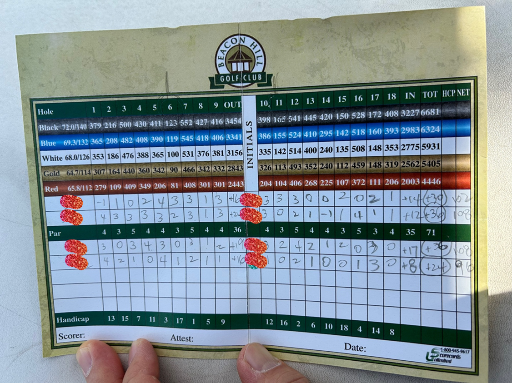

(Written by Claude 3.0 Opus)
오늘은 아내가 딸아이 방에 방충망을 다시 설치한 날이다. 딸아이가 2년 전에 더러워진 방충망을 뺐던 게 엊그제 같은데, 벌써 그렇게 시간이 흘렀나 보다.
아내는 두 개의 방충망을 연결하고, 압정으로 창틀에 고정시키느라 분주했다. 그 모습을 지켜보니, 문득 미안한 마음이 들었다. 나는 그동안 방충망 하나 제대로 설치하지 않았던 것이다. 아내는 늘 이런 집안일을 도맡아 하면서도 내색하지 않았다.
창밖으로 봄볕이 따사롭게 내리쬐고, 화창한 날씨와는 대조적으로 마음 한구석이 찌릿했다. 가족을 위해 묵묵히 희생하는 아내에게 고마움을 제대로 표현하지 못했던 것 같아 자책감이 들었다.
오래된 집이라 여기저기 수리할 것이 많다. 방충망 뿐만 아니라 앞으로도 고쳐나가야 할 부분이 적지 않을 것이다. 하지만 아내와 함께 차근차근 해결해 나간다면 못 할 것도 없을 거라는 생각이 든다.
서로 힘을 보태고 격려하며 살아가는 것, 그것이 바로 가족이 아닐까. 앞으로는 아내의 곁에서 더 든든한 버팀목이 되어주고 싶다. 행복한 우리 집을 만들어가는 일에 남편으로서, 아버지로서 최선을 다하겠다.

...
...
...
암컷 거위를 따라 줄지어 헤엄치는 거위들의 모습이 너무나 사랑스러웠다. 거위들은 사람들의 존재에 아랑곳하지 않고 여유롭게 물 위를 미끄러졌다. 자연 속 작은 생명들의 평화로운 일상을 엿볼 수 있는 소중한 순간이었다. 그러나 골프 실력은 여전히 부족했다. 첫 번째 홀에서 티 샷을 날렸지만, 공은 페어웨이를 벗어나 러프에 빠지고 말았다. 두 번째 샷에서도 그린을 맞히지 못했다. 결국 더블 보기를 기록하고 말았다. 다음 홀에서도 비슷한 실수가 이어졌다. 하지만 모든 게 순탄하지는 않았다. 파3 홀에서는 기분 좋은 일이 있었다. 티 샷이 홀 근처에 떨어졌고, 퍼팅에 성공하면서 파를 기록했다. 스코어 카드를 제출하니 스타벅스 5불 기프트카드를 상품으로 받을 수 있었다. 작은 성취감에 기분이 좋아졌지만, 전체적인 실력은 여전히 아쉬웠다. 골프를 마치고 스코어를 집계해보니 총 108타를 기록했다.  평소보다 10타나 더 쳤다. 티 샷과 아이언 샷의 방향성이 좋지 않았고, 퍼팅도 난조를 보였다. 골프는 결코 만만한 운동이 아니었다. 꾸준한 연습과 노력이 필요할 것 같았다. 그래도 좋은 날씨 속에서 골프를 즐길 수 있어서 감사했다. 친구들과 이야기를 나누며 코스를 돌았던 것도 큰 즐거움이었다. 골프는 단순히 운동만이 아니라 사람들과 어울릴 수 있는 사교의 장이기도 했다. 골프를 치면서 자연을 만끽할 수 있다는 건 정말 큰 축복이었다. 녹음이 우거진 나무들, 바람에 살랑이는 잔디, 맑은 하늘과 구름들. 자연은 늘 그 자리에서 변함없는 아름다움을 뽐내고 있었다. 그 속에서 골프를 즐기는 기쁨은 결코 작지 않았다. 골프는 어렵지만 매력적인 운동이다. 몸과 마음을 모두 움직여야 하고, 꾸준한 노력이 필요하다. 하지만 그 과정에서 느끼는 작은 성취감과 만족감은 결코 작지 않다. 자연 속에서 맞이하는 평화로운 순간들은 일상의 스트레스를 잊게 해준다. 앞으로도 이런 행복한 골프 라운딩을 계속할 수 있기를 기대한다. 날씨도 좋고, 코스 컨디션도 좋았던 오늘처럼 말이다. 골프를 통해 자연을 음미하고, 소중한 사람들과 시간을 보내는 즐거움을 누리고 싶다.
비록 오늘의 스코어는 만족스럽지 못했지만, 중요한 건 과정에서 느끼는 행복이었다.
Go Back to Brunch Page
골프를 통해 자연을 음미하고, 소중한 사람들과 시간을 보내는 즐거움을 누리고 싶다.
비록 오늘의 스코어는 만족스럽지 못했지만, 중요한 건 과정에서 느끼는 행복이었다.
Go Back to Brunch Page